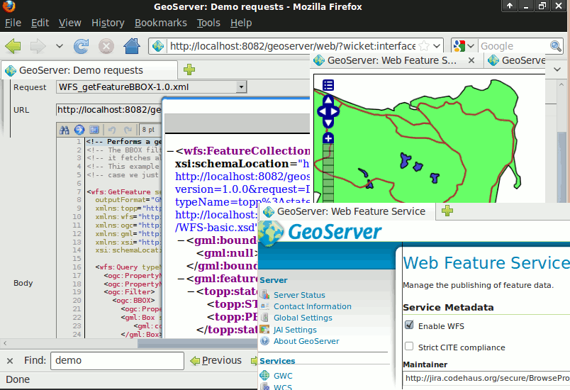

GeoServer¶
Web szolgáltatás¶
A GeoServer egy web szerver, mely lehetővé teszi önnek, hogy különböző formátumú térképeket és adatokat szolgáltasson szabványos klienseknek mint például web böngészők és asztali GIS programok. Az adatokat szabványokon alapuló interfészeken keresztül publikálja, mint például WMS, WFS, WCS, WPS, Tile Cache és továbbiak. A GeoServer böngésző alapú kezelő felülettel érkezik és több adatforráshoz kapcsolódik a szerver oldalon.
{kind=link}
Alapfunkciók¶
- Adatot szolgáltat különböző adattárakból:
- Vektor
Shape fájlok, külső WFS
PostGIS, ArcSDE, DB2, Oracle Spatial, MySql, SQL Server
- Raszter
GeoTiff, JPG és PNG (world fájllal), kép piramis, GDAL formatumok, kép mozaik, Oracle GeoRaster, NetCDF
- Az adatokat biztonságosan és gyorsan képként szolgáltatja WMS és WMTS protokollok használatával:
Mivel az adatokat képként szolgáltatjuk, az adatai teljes biztonságban vannak. Hacsak nem digitalizálják újra nincs lehetőség az adatainak ellopására. Az egyes térképi rétegek megjelenése SLD szabvány felhasználásával vezérelhető, mely lehetővé teszi az elemek színezését és címkézését. Ezeket a szabályokat az OGC szűrőkkel kombinálva , méretarány függő stílusokat implementálhatunk, lehető téve, hogy több részlet jelenjen meg ahogy a felhasználó nagyít. Címke ütközést, csoportosítást és prioritást is implementálták.
- Vektor adatok küldhetők a kliensnek a WFS protokoll használatával:
WFS kliens vektor adatokat tud letölteni és térkép megjelenítéshez, térinformatikai elemzéshez és más műveletekhez használja azok. Ha engedélyezett a felhasználó módosíthatja is az adatokat, és a WFS-T protokoll segítségével visszaküldi a kiszolgálónak, hogy frissítse a tárolt adatok. Az adatok GML (tömörített) valamint más szabványos formátumokban mint például shape fájl és json továbbíthatók.
- Raszter adatok a WCS protokoll felhasználásával küldhetők a kliensnek:
A GIS kliens kérheti az aktuális raszter adatokat térbeli elemzésekhez. Ez lehetővé teszi a felhasználónak, hogy alkalmazásokat hozzon létre, mely az adatok által leírt feldolgozást modellezi.
- Vetületi átszámítás röptében:
GeoServer támogatja az EPSG vetületi adatbázisok többségét és bármelyikre át tud vetíteni igény esetén, így korlátozott vetületi számításokkal rendelkező kliensek a szervernek adhatják át a feladatot.
- Csempe Cache
GeoWebCache, melyet integráltak a GeoServer-be, csempékre bontja és gyorstárazza a legkülönbözőbb forrásokból származó a térkép képeket, mint például a WMS. Különböző szolgáltatás interfészeket (például WMS-C, WMTS, TMS, Google Maps KML, Virtual Earth) implementál, hogy felgyorsítsa és optimalizálja a térkép képek letöltését. Ez újrakészítheti csempékkel is, hogy a szokásos WMS kliensekkel együttműködjön.
- Web Processing Service (WPS)
Térinformatikai algoritmusok, melyeket a JTS tartalmaz a GeoServer Web Processing Service (WPS) interfészen keresztül meghívhatók. Ez magában foglalja a folyamatok láncolatát, és a megjelenítési transzformációk használatával hatékony vizualizációkat hozhatunk létre a WMS interfészen keresztül.
Implementált szabványok¶
Számos Open Geospatial Consortium (OGC) szabvány támogatása:
Részletek¶
Honlap: http://geoserver.org/
Licenc: GNU General Public License (GPL) version 2
Szoftver verzió: 2.18.1
Támogatott platformok: Java 8 (Oracle JDK és OpenJDK) Windows-on, Linux-on, és Mac-en
API Interfészek: WMS, WFS, WCS, REST
Támogatás: http://geoserver.org/support/